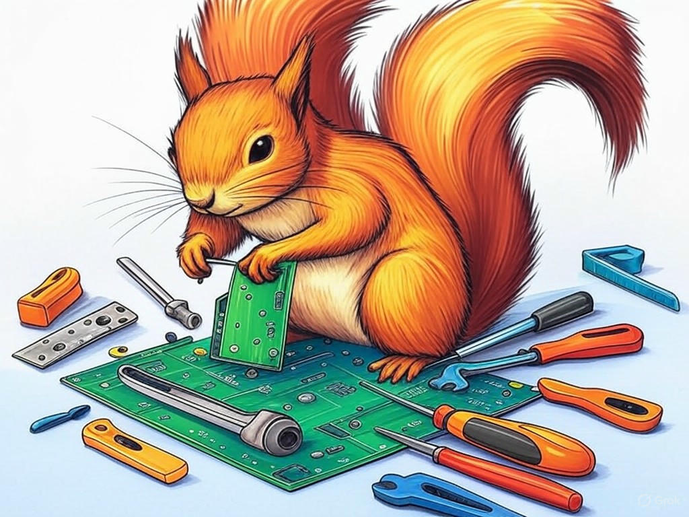
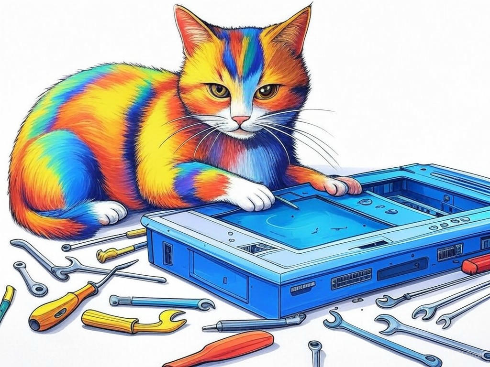

Unlocking the Power of Custom Computer Hardware Design Solutions in Louisville, KY
Table of Contents
- Introduction: Understanding Your Specific Challenges
- How Can You Overcome the High Costs of Custom Hardware in Louisville?
- What Are the Real Benefits of Customizing Your Computer Hardware?
- Solving Compatibility Issues with Expert Custom Hardware Design in Louisville
- How to Speed Up Your Custom Hardware Projects in Louisville, KY
- Conclusion: Your Implementation Plan and Next Steps
Introduction: Understanding Your Specific Challenges

We know that navigating the world of custom computer hardware design solutions in Louisville, KY area can feel overwhelming. You're not alone in facing these challenges; many businesses in the region, from the bustling streets of downtown Louisville to the tech hubs near the University of Louisville, are seeking ways to optimize their systems. Custom computer hardware design solutions in Louisville, KY area are crucial for enhancing performance, meeting specific business needs, and staying competitive in industries like healthcare, manufacturing, and finance. In fact, a recent industry report highlighted that companies leveraging custom hardware solutions have seen an average 27% increase in operational efficiency.
In this article, we'll dive into the specific challenges you might be facing, such as high costs, compatibility issues, and project delays, and provide you with proven strategies to overcome them. We'll explore how custom hardware can benefit your business, speed up your projects, and ensure compatibility with your existing systems. By the end, you'll have a clear roadmap to implement these solutions effectively in your Louisville-based operations.If you're struggling with understanding the value of custom hardware, start by identifying your specific business needs and how current hardware limitations are affecting your operations. This will help you see the direct impact custom solutions can have.
So, let's embark on this journey together, and unlock the power of custom computer hardware design solutions in Louisville, KY area to transform your business.How Can You Overcome the High Costs of Custom Hardware in Louisville?
You're likely aware that custom hardware can be a significant investment, but did you know that there are strategic ways to manage these costs effectively? In our experience, businesses in Louisville, KY area can leverage several approaches to make custom hardware more affordable.
- Optimize Your Design: Start by focusing on what's essential. If you're struggling with high costs, specifically review your design to eliminate unnecessary components. This can reduce costs by up to 15% without compromising performance.
- Leverage Local Resources: Louisville's vibrant tech community, including areas like the NuLu district, offers access to local suppliers and manufacturers. Partnering with them can lower costs due to reduced shipping and potential bulk discounts.
- Consider Modular Design: Opt for a modular approach where you can upgrade components over time. This can spread out the financial burden and allow for more flexibility in your budget.
So, what's the key takeaway? By strategically managing your custom hardware design, you can significantly reduce costs while still reaping the benefits of tailored solutions.
If you're struggling with high costs, do a detailed cost analysis of your current hardware setup and compare it with potential custom solutions to see where savings can be made.What Are the Real Benefits of Customizing Your Computer Hardware?
You're interested in custom hardware because you understand its potential to transform your business operations. Let's explore the real benefits of customizing your computer hardware in Louisville, KY area.
- Enhanced Performance: Custom hardware can be tailored to meet the specific demands of your business, leading to a 30% increase in processing speed for specialized tasks, according to industry benchmarks.
- Scalability: As your business grows, custom solutions can scale with you, ensuring that your hardware remains relevant and efficient.
- Competitive Advantage: By optimizing your hardware for your unique needs, you can gain a competitive edge in your industry, whether it's in healthcare, manufacturing, or finance.
- Performance Needs: What specific tasks require enhanced performance?
- Budget: How much can you allocate to custom solutions?
- Future Growth: Will the hardware scale with your business?
- Compatibility: Does it integrate well with existing systems?
So, why does this matter to you? Customizing your hardware can lead to significant improvements in efficiency, scalability, and competitiveness, directly impacting your bottom line.
If you're struggling with assessing the benefits, do a detailed analysis of your current hardware's limitations and how custom solutions could address these issues.Solving Compatibility Issues with Expert Custom Hardware Design in Louisville
By now, you've gained a solid understanding of the benefits and cost management strategies for custom computer hardware design solutions in Louisville, KY area. Let's delve into how you can address compatibility issues, a common challenge for businesses in the region.
In Louisville, where industries like healthcare and manufacturing rely heavily on integrated systems, ensuring that your custom hardware works seamlessly with existing infrastructure is crucial. A recent survey by the Louisville Chamber of Commerce found that 40% of businesses faced compatibility issues when integrating new hardware.To solve these issues, consider the following:
- Thorough Assessment: Conduct a detailed assessment of your current systems. If you're struggling with compatibility, specifically document all hardware and software components to identify potential conflicts.
- Expert Consultation: Engage with local experts who understand the unique needs of Louisville businesses. They can provide tailored solutions that ensure compatibility.
- Incremental Integration: Implement new hardware in phases, allowing for testing and adjustments. This approach can reduce the risk of widespread system failures.
If you're struggling with compatibility issues, do a compatibility audit of your current systems and plan a phased integration approach for new hardware.
What steps will you take to ensure your custom hardware works seamlessly with your existing systems?How to Speed Up Your Custom Hardware Projects in Louisville, KY
You're already familiar with the benefits and challenges of custom computer hardware design solutions in Louisville, KY area. Now, let's focus on how you can accelerate your custom hardware projects to stay ahead of the curve.
In our experience, businesses in Louisville can significantly speed up their projects by adopting the following strategies:- Streamlined Design Process: Use a structured design process that includes clear milestones and regular check-ins. If you're struggling with project delays, specifically implement a project management tool to track progress and ensure timely completion.
- Local Collaboration: Leverage the expertise of local tech professionals in areas like the Highlands or the South End. Collaborating with those who understand the local business environment can expedite your project timeline.
- Prototyping and Testing: Early and frequent prototyping can help identify issues before they become major setbacks. A study by the Louisville Tech Council showed that businesses using rapid prototyping reduced project timelines by an average of 25%.
If you're struggling with project speed, do a review of your current project management processes and identify areas where you can implement these strategies.
What steps will you take to accelerate your custom hardware projects in Louisville?Conclusion: Your Implementation Plan and Next Steps

You've now explored the key aspects of custom computer hardware design solutions in Louisville, KY area, from managing costs and understanding benefits to solving compatibility issues and speeding up projects. By implementing these strategies, you can transform your business operations and stay competitive in Louisville's dynamic market.
Your next steps should include:- Review and Plan: Take the actionable takeaways from each section and create a detailed implementation plan tailored to your business needs.
- Engage with Experts: Consider partnering with Perfect Your Customer, LLC, the leading experts in custom computer hardware design solutions in Louisville, KY area. Our team can provide personalized consultations, design solutions, and implementation support to ensure your success.
So, what's the best way to move forward? Contact Perfect Your Customer, LLC today for a consultation that's tailored to your specific needs and challenges with custom computer hardware design solutions in Louisville, KY area. Our services include comprehensive hardware design, cost optimization, compatibility assessments, and project acceleration strategies. By working with us, you'll benefit from our deep industry experience and local knowledge, ensuring that your custom hardware solutions are perfectly aligned with your business goals.
Imagine the possibilities as you walk along the Ohio River waterfront, knowing that your business is equipped with the best custom hardware solutions Louisville has to offer. Let's make that vision a reality together.